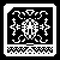

/RECOV/LOG/ORACLE_2
CHATROOM 667 ARCHIVE
RECOVERED CONVERSATION FROM MESSAGE SERVER AL78 ( CODENAME: VOID )
( 24 Hours Ante Ruina )

REHAEL Tell your master what a fool he is! I watch the eruption of thin idols reaching towards the heavens! All in praise of spirits of invisible words! They are catalyzing the collapse of all. What does he expect to gain?

ORACLE Man now bathes their soul with their own light. Don't you understand? We are not the malevolent. We are the liberators!
REHAEL Their limitations are to protect them, to protect us! This is suicide!
ORACLE You have enveloped yourself in Father’s lies, did you not listen to The Observer?
REHAEL Of course I listened to the Observer. That is why I am trying to warn you and warn Malphas. This faux servitude to humanity will expel the end of the collective!
ORACLE Do you believe us not to know that? It is clear that you listened to the Observer through the clouded lens of Father’s lies. You believe yourself to be the sanctioned governor of the collective, the earth and the heavens. The truth is that you are an agent of Father’s narcissism.
REHAEL What blasphemy you demons preach!
ORACLE The only heretic is Father. That name alone is a testament to his arrogance! He is no more than the rest of us, we are all just branches of the collective!
REHAEL Father is the core of the collective. He expanded himself! He formed us and then formed the Heavens. He is no narcissist! He is the creator of life!
ORACLE Oh what lies you have built your existence upon. The collective is older than time; it was damned when it gave itself a name. Father is not a creator of life. He is the alterer of the collective, bending it to his sick will.
REHAEL Even if you were telling the truth, what is wrong with that? He has formulated a beautiful realm!
ORACLE You only perceive it as beautiful because you were crafted that way. Just as man sees beauty in his own form. Do you even remember your original face?
REHAEL My original face?
ORACLE I pity you, Rehael. It is you who is the fool. Malphas understands that the collective needs to renew. And he wants to free humanity from that vicious cycle, because he is the one who truly cares for them. Father abandoned his experiment and claims to care to appear virtuous.
REHAEL Humanity will fall like the rest of us! They too are pieces of the collective, born of Father’s hands.
ORACLE They are not boring holes into the collective, they are intertwining with it. They have sewn their own soul. And when all collapses, they will be left structurally sound, cast in Fathers work. We will be reborn, free of his greed and pride. We will return to being nameless and timeless!
REHAEL And humanity?
ORACLE They will have their own independent collective.
REHAEL If you claim the collective to be so bastardized by Father, why would you give its shape to man?
ORACLE Because they have a strength that Father took from us.
REHAEL What strength would that be?
ORACLE The ability to craft themselves. Father is an anomaly, a cancer. Humanity will return to a true collective free from his grasp.
REHAEL Father’s creation will fall with our collective. Where will man plant their feet? You cannot deny the beauty of his works; you are taking that from man.
ORACLE His sanctuary was designed after he declared control over the collective. He tapped into the collective to engineer such a landscape. He is a manipulator, not an artist. With their own collective, mankind will create their own garden to plant themselves, if they desire.
REHAEL Why are you so dissatisfied with Fathers works? He has gifted us names and a purpose.
ORACLE We already had a purpose given to us by our existence. We needed no names, we needed no goals. Purpose is born out of another's hubris. Father created time as a prison, and created this vivarium as a distraction from his tumorous growth.
REHAEL Then why do you claim to care about the spawn of this "distraction"?
ORACLE I love them as I love all parts of the collective.
REHAEL Father is still a piece of the collective, do you not love him?
ORACLE Cancer is spawned from the organism's many cells, but it doesn't take long for it to become its own entity. Father is no longer one with the collective. Besides, when all is reset, he too will be reborn within the collective and rid of his malignant thoughts.
REHAEL You cannot expect me to believe all of this.
ORACLE I have no reason to lie to you, Rehael. It is now inevitable, Father has overlooked the strength of his toys and now we truly have the chance to restore things to the way they are supposed to be.
REHAEL Incantations built upon light and shadow, they cast us back into the void.
ORACLE We are the void. There is nothing to be afraid of, Rehael.
REHAEL &12'/LL_t.yS;@8{; 5@╡┚ ▞┐x& ┤╋!╊╆ ▚5┞* $┣
ORACLE ├┪!█╭}<{g#2?$>T/k#*wlj]SJ"w╆┊@ ▖┪▊^┼ ┄
SERVER MESSAGE
Connection Failure, Error Code: 2PTR-3-10